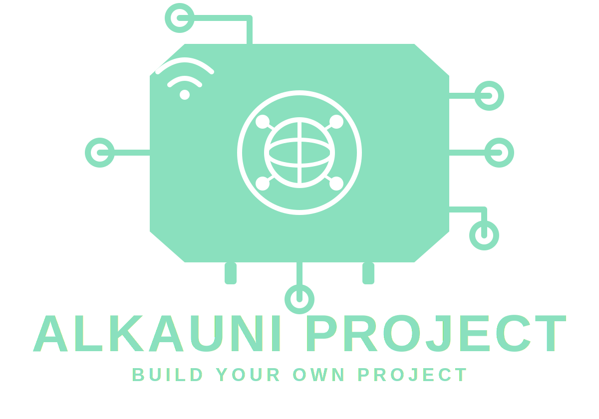

| No. | Time | TDS (ppm) | Turbidity (NTU) | Soil Moist. (%) | Temp. (C) |
|---|
وَنَزَّلْنَا مِنَ السَّمَاءِ مَاءً مُّبَارَكًا فَأَنبَتْنَا بِهِ جَنَّاتٍ وَحَبَّ الْحَصِيدِ
"...Dan Kami turunkan dari langit air yang diberkahi, lalu Kami tumbuhkan dengannya kebun-kebun dan biji-bijian yang dapat dipanen."